Chapter 3 lubridate处理时间数据
加载程序包
library(tidyverse) #作图
library(readxl) #读取excel文件
library(lubridate) #处理时间数据3.1 时间格式转化
3.1.1 字符串转化为日期（Date）格式
a <- "20220318" # a是字符格式
class(a)## [1] "character"b <- ymd(a) #将a转化为日期格式
class(b)## [1] "Date"# ymd，ydm，mdy，myd等系列函数，`?ymd`查看
mdy("03/18/2022") ## [1] "2022-03-18"日期格式自由，均能正确转化
ymd("2022/03/18")## [1] "2022-03-18"x <- c(20090101, "2009-01-02", "2009 01 03", "2009-1-4", "2009-1, 5", "Created on 2009 1 6", "200901 !!! 07")
ymd(x)## [1] "2009-01-01" "2009-01-02" "2009-01-03" "2009-01-04" "2009-01-05"
## [6] "2009-01-06" "2009-01-07"3.3 提取日期-时间数据中的信息
now() #现在时刻## [1] "2022-06-07 08:02:31 CST"Sys.time() #电脑系统的现在时刻## [1] "2022-06-07 08:02:31 CST"y <- now()
hour(y) #几时？## [1] 8minute(y) #几分？## [1] 2second(y) #几秒？## [1] 31.29709wday(y, week_start = 1, label = T ) #星期几？（文字表示）## [1] Tue
## Levels: Mon < Tue < Wed < Thu < Fri < Sat < Sunyday(y) #一年中的第几天？## [1] 158week(y) #一年中的第几个星期？## [1] 233.4 时区
关于时区设置：?locales查询
关于时区名称，查看维基百科：
https://en.wikipedia.org/wiki/List_of_tz_database_time_zones
Sys.timezone() #所在时区：亚洲/上海，即北京时间## [1] "Asia/Shanghai"OlsonNames() #查询所有时区名称，该数据库由David Olson创立## [1] "Africa/Abidjan" "Africa/Accra"
## [3] "Africa/Addis_Ababa" "Africa/Algiers"
## [5] "Africa/Asmara" "Africa/Asmera"
## [7] "Africa/Bamako" "Africa/Bangui"
## [9] "Africa/Banjul" "Africa/Bissau"
## [11] "Africa/Blantyre" "Africa/Brazzaville"
## [13] "Africa/Bujumbura" "Africa/Cairo"
## [15] "Africa/Casablanca" "Africa/Ceuta"
## [17] "Africa/Conakry" "Africa/Dakar"
## [19] "Africa/Dar_es_Salaam" "Africa/Djibouti"
## [21] "Africa/Douala" "Africa/El_Aaiun"
## [23] "Africa/Freetown" "Africa/Gaborone"
## [25] "Africa/Harare" "Africa/Johannesburg"
## [27] "Africa/Juba" "Africa/Kampala"
## [29] "Africa/Khartoum" "Africa/Kigali"
## [31] "Africa/Kinshasa" "Africa/Lagos"
## [33] "Africa/Libreville" "Africa/Lome"
## [35] "Africa/Luanda" "Africa/Lubumbashi"
## [37] "Africa/Lusaka" "Africa/Malabo"
## [39] "Africa/Maputo" "Africa/Maseru"
## [41] "Africa/Mbabane" "Africa/Mogadishu"
## [43] "Africa/Monrovia" "Africa/Nairobi"
## [45] "Africa/Ndjamena" "Africa/Niamey"
## [47] "Africa/Nouakchott" "Africa/Ouagadougou"
## [49] "Africa/Porto-Novo" "Africa/Sao_Tome"
## [51] "Africa/Timbuktu" "Africa/Tripoli"
## [53] "Africa/Tunis" "Africa/Windhoek"
## [55] "America/Adak" "America/Anchorage"
## [57] "America/Anguilla" "America/Antigua"
## [59] "America/Araguaina" "America/Argentina/Buenos_Aires"
## [61] "America/Argentina/Catamarca" "America/Argentina/ComodRivadavia"
## [63] "America/Argentina/Cordoba" "America/Argentina/Jujuy"
## [65] "America/Argentina/La_Rioja" "America/Argentina/Mendoza"
## [67] "America/Argentina/Rio_Gallegos" "America/Argentina/Salta"
## [69] "America/Argentina/San_Juan" "America/Argentina/San_Luis"
## [71] "America/Argentina/Tucuman" "America/Argentina/Ushuaia"
## [73] "America/Aruba" "America/Asuncion"
## [75] "America/Atikokan" "America/Atka"
## [77] "America/Bahia" "America/Bahia_Banderas"
## [79] "America/Barbados" "America/Belem"
## [81] "America/Belize" "America/Blanc-Sablon"
## [83] "America/Boa_Vista" "America/Bogota"
## [85] "America/Boise" "America/Buenos_Aires"
## [87] "America/Cambridge_Bay" "America/Campo_Grande"
## [89] "America/Cancun" "America/Caracas"
## [91] "America/Catamarca" "America/Cayenne"
## [93] "America/Cayman" "America/Chicago"
## [95] "America/Chihuahua" "America/Coral_Harbour"
## [97] "America/Cordoba" "America/Costa_Rica"
## [99] "America/Creston" "America/Cuiaba"
## [101] "America/Curacao" "America/Danmarkshavn"
## [103] "America/Dawson" "America/Dawson_Creek"
## [105] "America/Denver" "America/Detroit"
## [107] "America/Dominica" "America/Edmonton"
## [109] "America/Eirunepe" "America/El_Salvador"
## [111] "America/Ensenada" "America/Fort_Nelson"
## [113] "America/Fort_Wayne" "America/Fortaleza"
## [115] "America/Glace_Bay" "America/Godthab"
## [117] "America/Goose_Bay" "America/Grand_Turk"
## [119] "America/Grenada" "America/Guadeloupe"
## [121] "America/Guatemala" "America/Guayaquil"
## [123] "America/Guyana" "America/Halifax"
## [125] "America/Havana" "America/Hermosillo"
## [127] "America/Indiana/Indianapolis" "America/Indiana/Knox"
## [129] "America/Indiana/Marengo" "America/Indiana/Petersburg"
## [131] "America/Indiana/Tell_City" "America/Indiana/Vevay"
## [133] "America/Indiana/Vincennes" "America/Indiana/Winamac"
## [135] "America/Indianapolis" "America/Inuvik"
## [137] "America/Iqaluit" "America/Jamaica"
## [139] "America/Jujuy" "America/Juneau"
## [141] "America/Kentucky/Louisville" "America/Kentucky/Monticello"
## [143] "America/Knox_IN" "America/Kralendijk"
## [145] "America/La_Paz" "America/Lima"
## [147] "America/Los_Angeles" "America/Louisville"
## [149] "America/Lower_Princes" "America/Maceio"
## [151] "America/Managua" "America/Manaus"
## [153] "America/Marigot" "America/Martinique"
## [155] "America/Matamoros" "America/Mazatlan"
## [157] "America/Mendoza" "America/Menominee"
## [159] "America/Merida" "America/Metlakatla"
## [161] "America/Mexico_City" "America/Miquelon"
## [163] "America/Moncton" "America/Monterrey"
## [165] "America/Montevideo" "America/Montreal"
## [167] "America/Montserrat" "America/Nassau"
## [169] "America/New_York" "America/Nipigon"
## [171] "America/Nome" "America/Noronha"
## [173] "America/North_Dakota/Beulah" "America/North_Dakota/Center"
## [175] "America/North_Dakota/New_Salem" "America/Nuuk"
## [177] "America/Ojinaga" "America/Panama"
## [179] "America/Pangnirtung" "America/Paramaribo"
## [181] "America/Phoenix" "America/Port_of_Spain"
## [183] "America/Port-au-Prince" "America/Porto_Acre"
## [185] "America/Porto_Velho" "America/Puerto_Rico"
## [187] "America/Punta_Arenas" "America/Rainy_River"
## [189] "America/Rankin_Inlet" "America/Recife"
## [191] "America/Regina" "America/Resolute"
## [193] "America/Rio_Branco" "America/Rosario"
## [195] "America/Santa_Isabel" "America/Santarem"
## [197] "America/Santiago" "America/Santo_Domingo"
## [199] "America/Sao_Paulo" "America/Scoresbysund"
## [201] "America/Shiprock" "America/Sitka"
## [203] "America/St_Barthelemy" "America/St_Johns"
## [205] "America/St_Kitts" "America/St_Lucia"
## [207] "America/St_Thomas" "America/St_Vincent"
## [209] "America/Swift_Current" "America/Tegucigalpa"
## [211] "America/Thule" "America/Thunder_Bay"
## [213] "America/Tijuana" "America/Toronto"
## [215] "America/Tortola" "America/Vancouver"
## [217] "America/Virgin" "America/Whitehorse"
## [219] "America/Winnipeg" "America/Yakutat"
## [221] "America/Yellowknife" "Antarctica/Casey"
## [223] "Antarctica/Davis" "Antarctica/DumontDUrville"
## [225] "Antarctica/Macquarie" "Antarctica/Mawson"
## [227] "Antarctica/McMurdo" "Antarctica/Palmer"
## [229] "Antarctica/Rothera" "Antarctica/South_Pole"
## [231] "Antarctica/Syowa" "Antarctica/Troll"
## [233] "Antarctica/Vostok" "Arctic/Longyearbyen"
## [235] "Asia/Aden" "Asia/Almaty"
## [237] "Asia/Amman" "Asia/Anadyr"
## [239] "Asia/Aqtau" "Asia/Aqtobe"
## [241] "Asia/Ashgabat" "Asia/Ashkhabad"
## [243] "Asia/Atyrau" "Asia/Baghdad"
## [245] "Asia/Bahrain" "Asia/Baku"
## [247] "Asia/Bangkok" "Asia/Barnaul"
## [249] "Asia/Beirut" "Asia/Bishkek"
## [251] "Asia/Brunei" "Asia/Calcutta"
## [253] "Asia/Chita" "Asia/Choibalsan"
## [255] "Asia/Chongqing" "Asia/Chungking"
## [257] "Asia/Colombo" "Asia/Dacca"
## [259] "Asia/Damascus" "Asia/Dhaka"
## [261] "Asia/Dili" "Asia/Dubai"
## [263] "Asia/Dushanbe" "Asia/Famagusta"
## [265] "Asia/Gaza" "Asia/Harbin"
## [267] "Asia/Hebron" "Asia/Ho_Chi_Minh"
## [269] "Asia/Hong_Kong" "Asia/Hovd"
## [271] "Asia/Irkutsk" "Asia/Istanbul"
## [273] "Asia/Jakarta" "Asia/Jayapura"
## [275] "Asia/Jerusalem" "Asia/Kabul"
## [277] "Asia/Kamchatka" "Asia/Karachi"
## [279] "Asia/Kashgar" "Asia/Kathmandu"
## [281] "Asia/Katmandu" "Asia/Khandyga"
## [283] "Asia/Kolkata" "Asia/Krasnoyarsk"
## [285] "Asia/Kuala_Lumpur" "Asia/Kuching"
## [287] "Asia/Kuwait" "Asia/Macao"
## [289] "Asia/Macau" "Asia/Magadan"
## [291] "Asia/Makassar" "Asia/Manila"
## [293] "Asia/Muscat" "Asia/Nicosia"
## [295] "Asia/Novokuznetsk" "Asia/Novosibirsk"
## [297] "Asia/Omsk" "Asia/Oral"
## [299] "Asia/Phnom_Penh" "Asia/Pontianak"
## [301] "Asia/Pyongyang" "Asia/Qatar"
## [303] "Asia/Qostanay" "Asia/Qyzylorda"
## [305] "Asia/Rangoon" "Asia/Riyadh"
## [307] "Asia/Saigon" "Asia/Sakhalin"
## [309] "Asia/Samarkand" "Asia/Seoul"
## [311] "Asia/Shanghai" "Asia/Singapore"
## [313] "Asia/Srednekolymsk" "Asia/Taipei"
## [315] "Asia/Tashkent" "Asia/Tbilisi"
## [317] "Asia/Tehran" "Asia/Tel_Aviv"
## [319] "Asia/Thimbu" "Asia/Thimphu"
## [321] "Asia/Tokyo" "Asia/Tomsk"
## [323] "Asia/Ujung_Pandang" "Asia/Ulaanbaatar"
## [325] "Asia/Ulan_Bator" "Asia/Urumqi"
## [327] "Asia/Ust-Nera" "Asia/Vientiane"
## [329] "Asia/Vladivostok" "Asia/Yakutsk"
## [331] "Asia/Yangon" "Asia/Yekaterinburg"
## [333] "Asia/Yerevan" "Atlantic/Azores"
## [335] "Atlantic/Bermuda" "Atlantic/Canary"
## [337] "Atlantic/Cape_Verde" "Atlantic/Faeroe"
## [339] "Atlantic/Faroe" "Atlantic/Jan_Mayen"
## [341] "Atlantic/Madeira" "Atlantic/Reykjavik"
## [343] "Atlantic/South_Georgia" "Atlantic/St_Helena"
## [345] "Atlantic/Stanley" "Australia/ACT"
## [347] "Australia/Adelaide" "Australia/Brisbane"
## [349] "Australia/Broken_Hill" "Australia/Canberra"
## [351] "Australia/Currie" "Australia/Darwin"
## [353] "Australia/Eucla" "Australia/Hobart"
## [355] "Australia/LHI" "Australia/Lindeman"
## [357] "Australia/Lord_Howe" "Australia/Melbourne"
## [359] "Australia/North" "Australia/NSW"
## [361] "Australia/Perth" "Australia/Queensland"
## [363] "Australia/South" "Australia/Sydney"
## [365] "Australia/Tasmania" "Australia/Victoria"
## [367] "Australia/West" "Australia/Yancowinna"
## [369] "Brazil/Acre" "Brazil/DeNoronha"
## [371] "Brazil/East" "Brazil/West"
## [373] "Canada/Atlantic" "Canada/Central"
## [375] "Canada/Eastern" "Canada/Mountain"
## [377] "Canada/Newfoundland" "Canada/Pacific"
## [379] "Canada/Saskatchewan" "Canada/Yukon"
## [381] "CET" "Chile/Continental"
## [383] "Chile/EasterIsland" "CST6CDT"
## [385] "Cuba" "EET"
## [387] "Egypt" "Eire"
## [389] "EST" "EST5EDT"
## [391] "Etc/GMT" "Etc/GMT-0"
## [393] "Etc/GMT-1" "Etc/GMT-10"
## [395] "Etc/GMT-11" "Etc/GMT-12"
## [397] "Etc/GMT-13" "Etc/GMT-14"
## [399] "Etc/GMT-2" "Etc/GMT-3"
## [401] "Etc/GMT-4" "Etc/GMT-5"
## [403] "Etc/GMT-6" "Etc/GMT-7"
## [405] "Etc/GMT-8" "Etc/GMT-9"
## [407] "Etc/GMT+0" "Etc/GMT+1"
## [409] "Etc/GMT+10" "Etc/GMT+11"
## [411] "Etc/GMT+12" "Etc/GMT+2"
## [413] "Etc/GMT+3" "Etc/GMT+4"
## [415] "Etc/GMT+5" "Etc/GMT+6"
## [417] "Etc/GMT+7" "Etc/GMT+8"
## [419] "Etc/GMT+9" "Etc/GMT0"
## [421] "Etc/Greenwich" "Etc/UCT"
## [423] "Etc/Universal" "Etc/UTC"
## [425] "Etc/Zulu" "Europe/Amsterdam"
## [427] "Europe/Andorra" "Europe/Astrakhan"
## [429] "Europe/Athens" "Europe/Belfast"
## [431] "Europe/Belgrade" "Europe/Berlin"
## [433] "Europe/Bratislava" "Europe/Brussels"
## [435] "Europe/Bucharest" "Europe/Budapest"
## [437] "Europe/Busingen" "Europe/Chisinau"
## [439] "Europe/Copenhagen" "Europe/Dublin"
## [441] "Europe/Gibraltar" "Europe/Guernsey"
## [443] "Europe/Helsinki" "Europe/Isle_of_Man"
## [445] "Europe/Istanbul" "Europe/Jersey"
## [447] "Europe/Kaliningrad" "Europe/Kiev"
## [449] "Europe/Kirov" "Europe/Lisbon"
## [451] "Europe/Ljubljana" "Europe/London"
## [453] "Europe/Luxembourg" "Europe/Madrid"
## [455] "Europe/Malta" "Europe/Mariehamn"
## [457] "Europe/Minsk" "Europe/Monaco"
## [459] "Europe/Moscow" "Europe/Nicosia"
## [461] "Europe/Oslo" "Europe/Paris"
## [463] "Europe/Podgorica" "Europe/Prague"
## [465] "Europe/Riga" "Europe/Rome"
## [467] "Europe/Samara" "Europe/San_Marino"
## [469] "Europe/Sarajevo" "Europe/Saratov"
## [471] "Europe/Simferopol" "Europe/Skopje"
## [473] "Europe/Sofia" "Europe/Stockholm"
## [475] "Europe/Tallinn" "Europe/Tirane"
## [477] "Europe/Tiraspol" "Europe/Ulyanovsk"
## [479] "Europe/Uzhgorod" "Europe/Vaduz"
## [481] "Europe/Vatican" "Europe/Vienna"
## [483] "Europe/Vilnius" "Europe/Volgograd"
## [485] "Europe/Warsaw" "Europe/Zagreb"
## [487] "Europe/Zaporozhye" "Europe/Zurich"
## [489] "Factory" "GB"
## [491] "GB-Eire" "GMT"
## [493] "GMT-0" "GMT+0"
## [495] "GMT0" "Greenwich"
## [497] "Hongkong" "HST"
## [499] "Iceland" "Indian/Antananarivo"
## [501] "Indian/Chagos" "Indian/Christmas"
## [503] "Indian/Cocos" "Indian/Comoro"
## [505] "Indian/Kerguelen" "Indian/Mahe"
## [507] "Indian/Maldives" "Indian/Mauritius"
## [509] "Indian/Mayotte" "Indian/Reunion"
## [511] "Iran" "Israel"
## [513] "Jamaica" "Japan"
## [515] "Kwajalein" "Libya"
## [517] "MET" "Mexico/BajaNorte"
## [519] "Mexico/BajaSur" "Mexico/General"
## [521] "MST" "MST7MDT"
## [523] "Navajo" "NZ"
## [525] "NZ-CHAT" "Pacific/Apia"
## [527] "Pacific/Auckland" "Pacific/Bougainville"
## [529] "Pacific/Chatham" "Pacific/Chuuk"
## [531] "Pacific/Easter" "Pacific/Efate"
## [533] "Pacific/Enderbury" "Pacific/Fakaofo"
## [535] "Pacific/Fiji" "Pacific/Funafuti"
## [537] "Pacific/Galapagos" "Pacific/Gambier"
## [539] "Pacific/Guadalcanal" "Pacific/Guam"
## [541] "Pacific/Honolulu" "Pacific/Johnston"
## [543] "Pacific/Kanton" "Pacific/Kiritimati"
## [545] "Pacific/Kosrae" "Pacific/Kwajalein"
## [547] "Pacific/Majuro" "Pacific/Marquesas"
## [549] "Pacific/Midway" "Pacific/Nauru"
## [551] "Pacific/Niue" "Pacific/Norfolk"
## [553] "Pacific/Noumea" "Pacific/Pago_Pago"
## [555] "Pacific/Palau" "Pacific/Pitcairn"
## [557] "Pacific/Pohnpei" "Pacific/Ponape"
## [559] "Pacific/Port_Moresby" "Pacific/Rarotonga"
## [561] "Pacific/Saipan" "Pacific/Samoa"
## [563] "Pacific/Tahiti" "Pacific/Tarawa"
## [565] "Pacific/Tongatapu" "Pacific/Truk"
## [567] "Pacific/Wake" "Pacific/Wallis"
## [569] "Pacific/Yap" "Poland"
## [571] "Portugal" "PRC"
## [573] "PST8PDT" "ROC"
## [575] "ROK" "Singapore"
## [577] "Turkey" "UCT"
## [579] "Universal" "US/Alaska"
## [581] "US/Aleutian" "US/Arizona"
## [583] "US/Central" "US/East-Indiana"
## [585] "US/Eastern" "US/Hawaii"
## [587] "US/Indiana-Starke" "US/Michigan"
## [589] "US/Mountain" "US/Pacific"
## [591] "US/Samoa" "UTC"
## [593] "W-SU" "WET"
## [595] "Zulu"
## attr(,"Version")
## [1] "2022a"3.5 时区
ymd_hms(now(), tz = "PRC") #将时间信息的时区设置为中国## [1] "2022-06-07 08:02:31 CST"with_tz(now(), tz="Europe/Berlin") #查看其他时区对应的时间，例如柏林## [1] "2022-06-07 02:02:31 CEST"3.6 时间计算
now() #现在时间 ## [1] "2022-06-07 08:02:31 CST"end <- paste(today(), "23:59:59") #今天的最后1秒
class(end) #是字符串，不是时间格式## [1] "character"end <- ymd_hms(end) #转化为时间格式
#今天还剩下多少时间
end - now() # 计算两点间的时间长度；有误，时区不同导致## Time difference of 23.95768 hoursend <- ymd_hms(end, tz="PRC") #时区设置为中国
end - now() #计算两点间的时间长度；正确## Time difference of 15.95768 hoursdifftime(end, now()) #另一种方法，计算两点间的时间长度## Time difference of 15.95768 hourstoday()-ymd(19820704) #我出生多少天了## Time difference of 14583 days3.7 时间数据可视化
3.7.1 厦门空气质量数据分析
数据来源：https://quotsoft.net/air/
已下载并整理出厦门2018-2021四年的空气质量数据（csv格式）。
读取并查看数据：
d2021 <- read.csv("data/xiamen air/xiamen_air_2021.csv") #读取2021年的数据
names(d2021) #包含PM2.5，PM10，NO2，SO2， O3， CO等污染物，以及日期、小时、AQI等信息## [1] "X" "hour" "AQI" "PM2.5" "PM2.5_24h" "PM10"
## [7] "PM10_24h" "SO2" "SO2_24h" "NO2" "NO2_24h" "O3"
## [13] "O3_24h" "O3_8h" "O3_8h_24h" "CO" "CO_24h" "date"3.7.2 2021年厦门PM2.5逐日变化趋势
d2021 %>%
mutate(date = ymd(date)) %>% #将date转化为日期格式（原为字符格式）
ggplot(aes(date, PM2.5)) +
geom_point()+ #所有点，每个小时1个点
stat_summary(geom="line", fun="mean", color="red") #日均值线## Warning: Removed 7 rows containing non-finite values (stat_summary).## Warning: Removed 7 rows containing missing values (geom_point).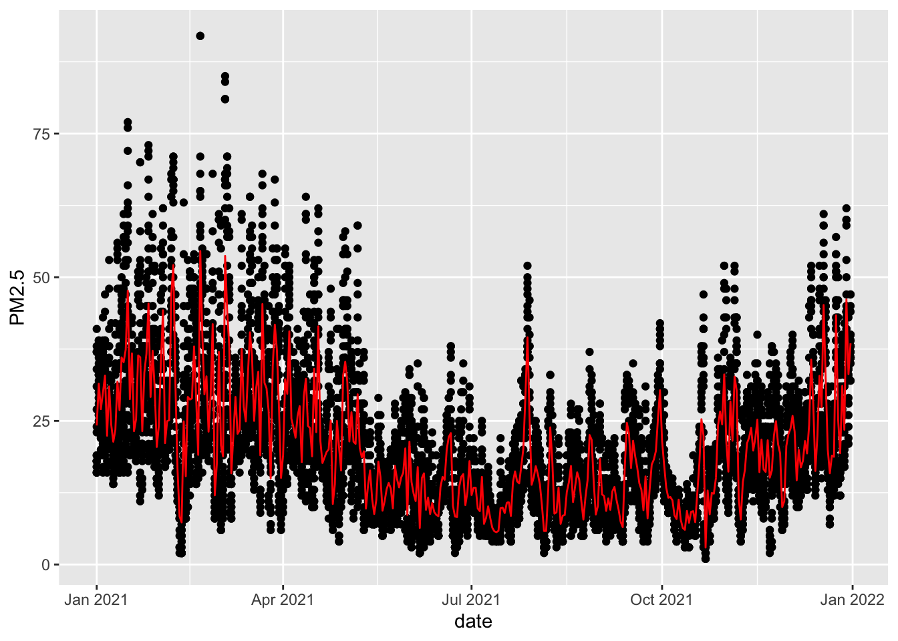
3.7.3 2021年厦门PM2.5逐日变化趋势：调整细节
d2021 %>%
mutate(date = ymd(date)) %>%
ggplot(aes(date, PM2.5)) +
theme_classic()+
geom_point(size=0.3, alpha=0.7, color="grey")+
stat_summary(geom="line", fun="mean", color="red2")+
scale_x_date(date_labels = "%m/%d", breaks = "1 month")+
#x轴时间格式设置，格式设置更多选择，查看?strptime(见下下页)
labs(x = "Date",
y = ~PM[2.5]~'('*mu*g~m^'-3'*')',
title = "Xiamen, 2021")## Warning: Removed 7 rows containing non-finite values (stat_summary).## Warning: Removed 7 rows containing missing values (geom_point).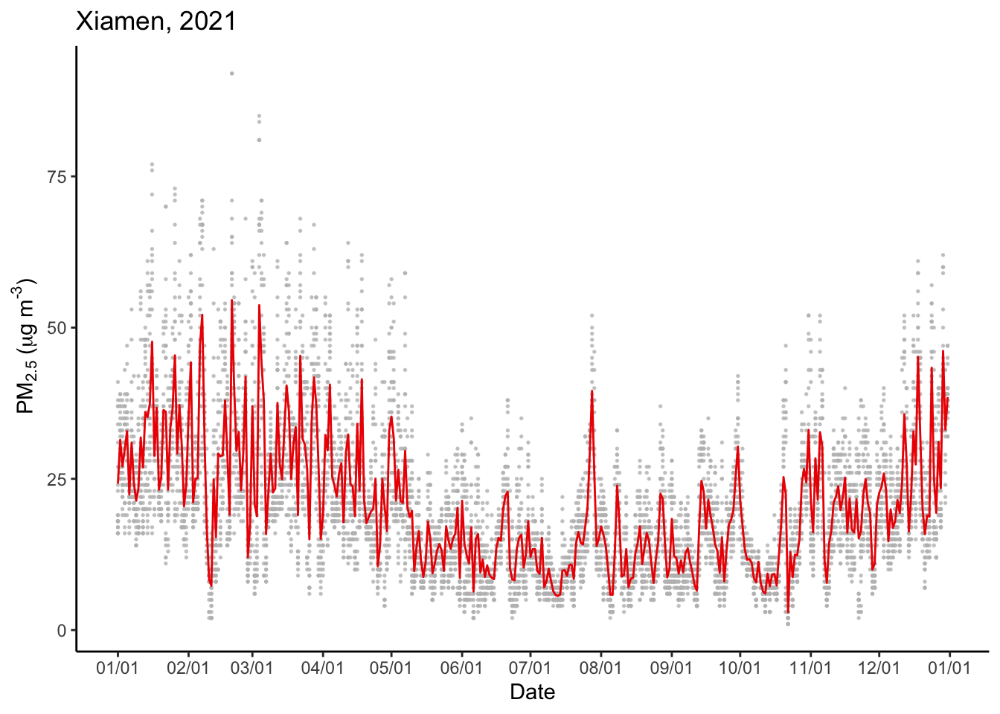
3.8 ?strptime查看日期时间格式
以下摘录部分，替换进.red[scale_x_date(date_labels = "%x")]试试以下代码的效果：
%b Abbreviated month name in the current locale on this platform. (Also matches full name on input: in some locales there are no abbreviations of names.) .red[月份文字缩写]
%B Full month name in the current locale. (Also matches abbreviated name on input.) .red[月份文字全称]
%d Day of the month as decimal number (01–31).
%D Date format such as %m/%d/%y: the C99 standard says it should be that exact format (but not all OSes comply). .red[MM/DD/YY格式]
%F Equivalent to %Y-%m-%d (the ISO 8601 date format).
%m Month as decimal number (01–12). .red[月份，两位数表示]
%x Date. Locale-specific on output, “%y/%m/%d” on input.
查看?strptime页面信息或上一页节选信息，尝试各种格式
format(today(), format = "%Y-%B-%d")## [1] "2022-June-07"format(today(), format = "%Y/%b/%d")## [1] "2022/Jun/07"format(today(), format = "%x")## [1] "06/07/2022"format(today(), format = "%F")## [1] "2022-06-07"format(today(), format = "%m-%d")## [1] "06-07"format(today(), format = "%D")## [1] "06/07/22"3.9 合并四年数据用于分析
d2018 <- read.csv("data/xiamen air/xiamen_air_2018.csv")
d2019 <- read.csv("data/xiamen air/xiamen_air_2019.csv")
d2020 <- read.csv("data/xiamen air/xiamen_air_2020.csv")
d2021 <- read.csv("data/xiamen air/xiamen_air_2021.csv")
d0 <- rbind(d2018, d2019, d2020, d2021)
dim(d0) #34330条数据；(4年应该有365.25*24*4 = 35064条，说明缺失几天数据）## [1] 34330 183.9.1 了解合并数据的结构，尤其是数据类型
str(d0)## 'data.frame': 34330 obs. of 18 variables:
## $ X : int 1 2 3 4 5 6 7 8 9 10 ...
## $ hour : int 0 1 2 3 4 5 6 7 8 9 ...
## $ AQI : int 81 84 87 NA NA NA NA NA NA NA ...
## $ PM2.5 : int 53 54 59 NA NA NA NA NA NA NA ...
## $ PM2.5_24h: int 45 46 47 NA NA NA NA NA NA NA ...
## $ PM10 : int 111 117 123 NA NA NA NA NA NA NA ...
## $ PM10_24h : int 83 85 88 NA NA NA NA NA NA NA ...
## $ SO2 : int 14 14 15 NA NA NA NA NA NA NA ...
## $ SO2_24h : int 12 13 13 NA NA NA NA NA NA NA ...
## $ NO2 : int 21 20 18 NA NA NA NA NA NA NA ...
## $ NO2_24h : int 32 31 31 NA NA NA NA NA NA NA ...
## $ O3 : int 78 83 90 NA NA NA NA NA NA NA ...
## $ O3_24h : int 78 83 90 NA NA NA NA NA NA NA ...
## $ O3_8h : int 67 83 86 NA NA NA NA NA NA NA ...
## $ O3_8h_24h: int 67 83 86 NA NA NA NA NA NA NA ...
## $ CO : num 0.83 0.8 0.77 NA NA NA NA NA NA NA ...
## $ CO_24h : num 0.77 0.77 0.77 NA NA NA NA NA NA NA ...
## $ date : int 20180101 20180101 20180101 20180101 20180101 20180101 20180101 20180101 20180101 20180101 ...3.10 数据整理
目前存在问题：（1）date还不是日期格式；（2）没有完整的日期时间列
d <- d0 %>%
mutate(time_ymdh = ymd_h(paste(date, hour))) #用ymd_h生成“年月日时”列
sample(d$time_ymdh, 10) #随机选10个查看，确认已是时间格式## [1] "2020-04-20 03:00:00 UTC" "2019-10-13 13:00:00 UTC"
## [3] "2018-03-30 20:00:00 UTC" "2018-01-22 02:00:00 UTC"
## [5] "2019-06-04 03:00:00 UTC" "2020-02-13 16:00:00 UTC"
## [7] "2019-09-16 06:00:00 UTC" "2021-12-06 17:00:00 UTC"
## [9] "2018-03-17 02:00:00 UTC" "2019-05-10 02:00:00 UTC"class(d$time_ymdh) #查看格式，确认是时间格式## [1] "POSIXct" "POSIXt"POSIXct = Portable Operating System Interface for Unix calendar time
Portable Operating System Interface for Unix calendar time
3.11 缺哪天的数据？
用数据可视化的方式，快速找出缺失数据的位置
d %>%
mutate(year = year(time_ymdh), #生成年列
month = month(time_ymdh), #生成月份列
day = day(time_ymdh)) %>% #生成日列
ggplot(aes(x = day, y = month, z = PM2.5))+
geom_raster(alpha = 0.5,fill = "blue")+ #作栅格图，找到缺失格
facet_wrap(~year)+
scale_x_continuous(breaks = 1:31)+
scale_y_continuous(breaks = 1:12)+
theme(panel.grid.minor = element_blank())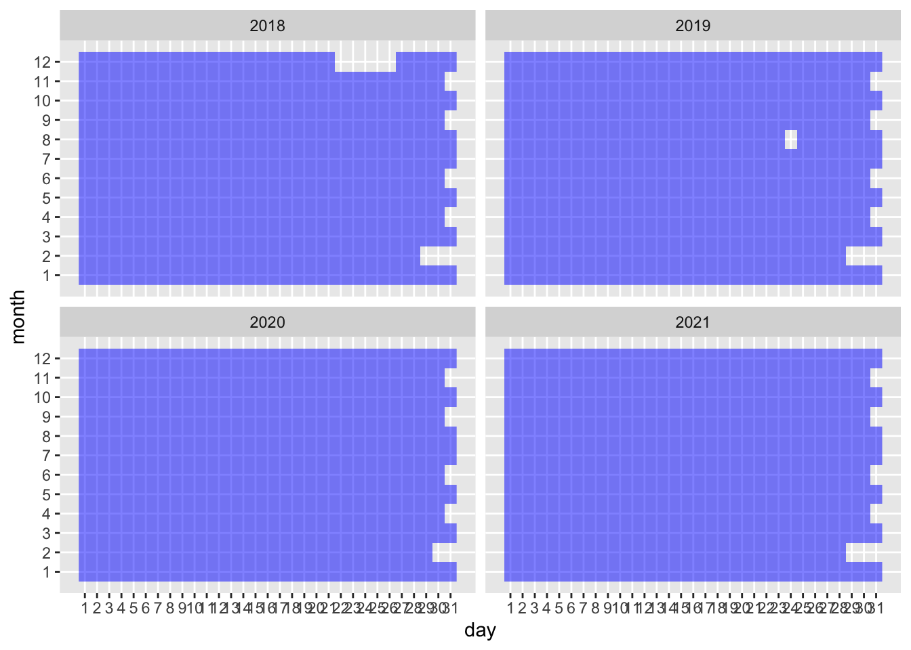
缺2018年12月22-26日和2019年8月24日数据。
可从其他渠道获取数据，将缺失数据补齐。我们暂且忽略缺失数据，继续分析。
3.12 总体趋势：厦门AQI的4年趋势
d %>%
ggplot(aes(time_ymdh, AQI))+ #time_ymdh是日期时间格式，可作为x变量
geom_line()+
geom_smooth(se=F) #去除置信区间阴影## `geom_smooth()` using method = 'gam' and formula 'y ~ s(x, bs = "cs")'## Warning: Removed 165 rows containing non-finite values (stat_smooth).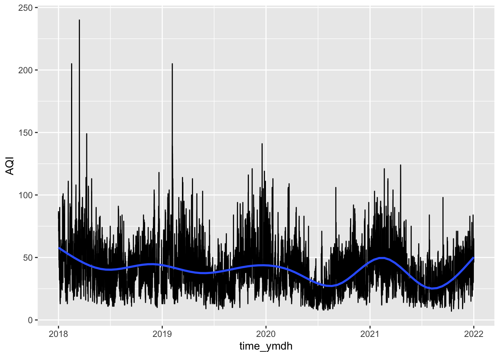
总体稳定在50上下，能看到明显的季节波动，空气质量优的天数在增加，污染的天数明显减少。
注：AQI = 0-50是优，51-100是良，101-150是轻度污染，151-200是中度污染，201-300是重度污染，300+是严重污染
3.13 总体趋势：一并查看6项指标
d %>%
select(time_ymdh, PM2.5, PM10, SO2, NO2, O3, CO) %>% #选出6项指标
pivot_longer(cols=2:7, names_to = "parameter", values_to = "value") %>% #将宽表格转为长表格，要转的数据在2-7列
ggplot(aes(time_ymdh, value))+
geom_line()+
facet_wrap(~parameter, scales="free_y")+
geom_smooth(se=F)## `geom_smooth()` using method = 'gam' and formula 'y ~ s(x, bs = "cs")'## Warning: Removed 1055 rows containing non-finite values (stat_smooth).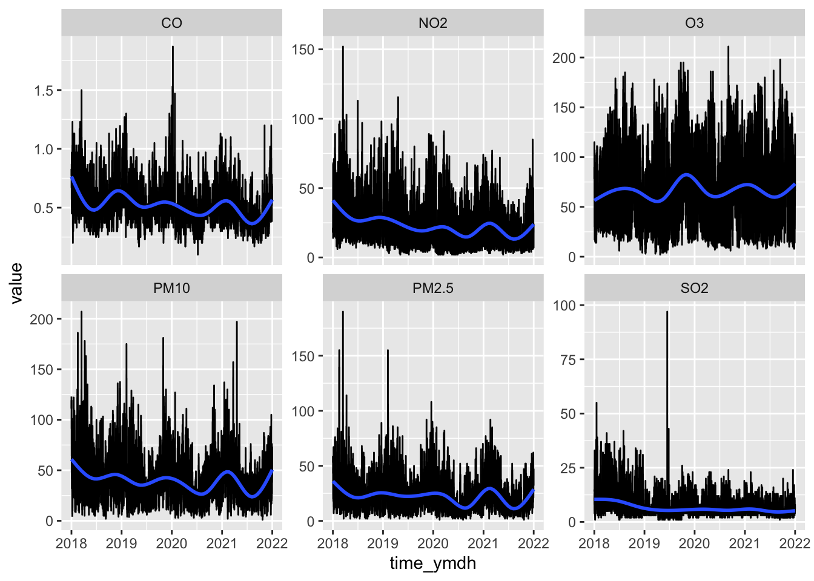
（1）CO、NO2、PM10、PM2.5、SO2浓度总体下降，极端值频率降低；（2）O3总体稳定；（3）季节波动明显
3.14 细看季节趋势：PM2.5
将4年数据分开看，计算每日PM2.5均值，查看PM2.5均值在一年中的逐日变化趋势。
d %>%
mutate(year = year(time_ymdh), #新增列：年份
time_d = yday(time_ymdh)) %>% #新增列：一年中的第几天
group_by(year, time_d) %>% #按某年的某日分组
summarise(mean = mean(PM2.5, na.rm = T)) %>% #计算PM2.5均值，注意去除缺失值
ggplot(aes(time_d, mean, color=factor(year)))+
geom_line()+
facet_wrap(~year)+
geom_smooth(se=F)+
guides(color="none") #去除多余的颜色图例## `summarise()` has grouped output by 'year'. You can override using the
## `.groups` argument.
## `geom_smooth()` using method = 'loess' and formula 'y ~ x'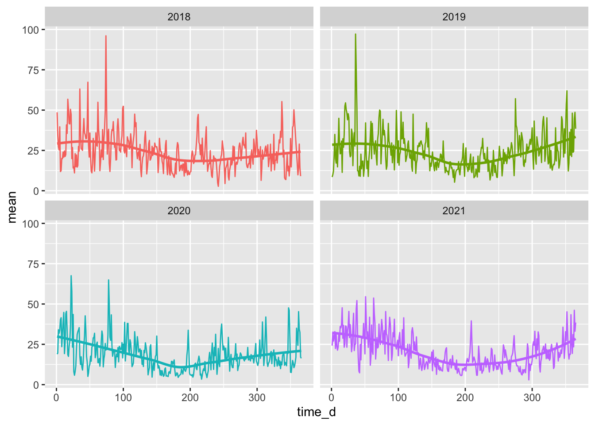
可以看到：PM2.5在冬春季节较高，夏秋季节较低，第200天左右（即7月份）达到最低值。
尝试一下：把PM2.5换成其他参数
3.15 细看各个月份：各月份的PM2.5概率密度分布
d %>%
mutate(month=month(time_ymdh)) %>%
ggplot(aes(x=PM2.5))+
theme_bw()+
geom_density(aes(color=factor(month))) #概率密度图，颜色映射到月份## Warning: Removed 166 rows containing non-finite values (stat_density).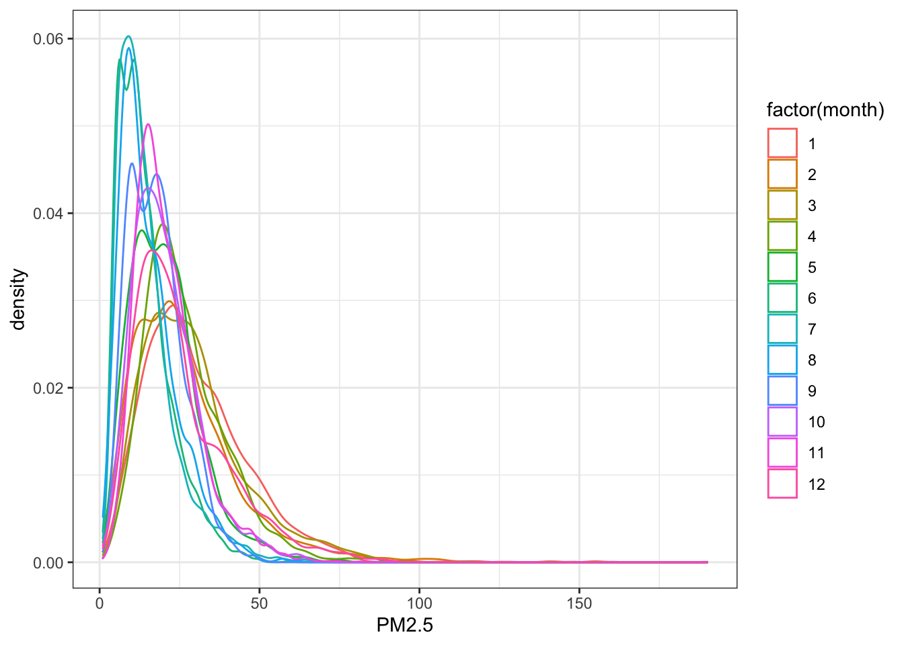
各月份有明显区别，但混在一起，较难分辨
3.16 对比各月份与总体的PM2.5概率密度分布
label_month <- month.name # month.name是12个月份的名称，敲一下看看
names(label_month) <- as.character(1:12) #用于将1-12月修改为January-December
d %>%
mutate(month=month(time_ymdh)) %>%
ggplot(aes(x=PM2.5))+
theme_bw()+
facet_wrap(~month,labeller = labeller(month = label_month))+
geom_density(data=d, fill="grey80", alpha=0.3)+ #所有月份的数据（d中不含month列，不会被分面）
geom_density(fill="red", color="red", alpha=0.2)+ #单独各个月份的数据（含month列，会被分面）
labs(x=~PM[2.5]~'('*mu*g~m^'-3'*')',
y="Probability density")## Warning: Removed 1992 rows containing non-finite values (stat_density).## Warning: Removed 166 rows containing non-finite values (stat_density).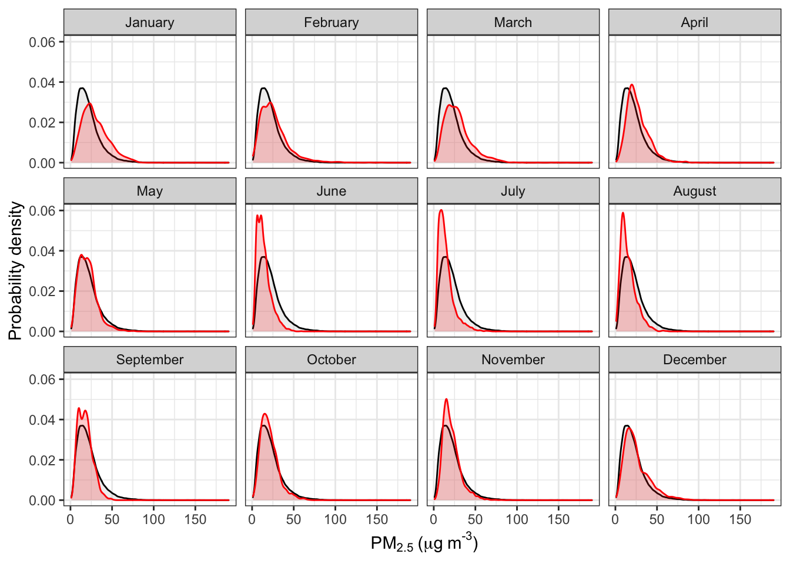
3.18 季节趋势：总览全部参数
d %>%
select(time_ymdh, PM2.5, PM10, SO2, NO2, O3, CO) %>%
mutate(year = year(time_ymdh),
time_d = yday(time_ymdh)) %>%
pivot_longer(cols=2:7, names_to = "parameter", values_to = "value") %>%
ggplot(aes(time_d, value, color=factor(year)))+
geom_line(alpha=0.4)+
facet_grid(parameter~year, scales="free")+
geom_smooth(se=F)+
guides(color="none")## `geom_smooth()` using method = 'gam' and formula 'y ~ s(x, bs = "cs")'## Warning: Removed 1055 rows containing non-finite values (stat_smooth).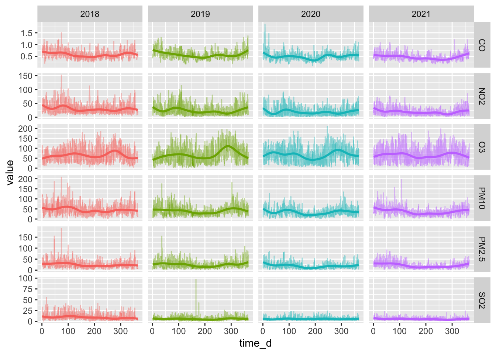
3.19 工作日-周末趋势：PM2.5
d %>%
mutate(weekday = wday(time_ymdh, week_start = 1),
month=month(time_ymdh)) %>%
group_by(weekday) %>%
summarise(mean = mean(PM2.5, na.rm=T),
sd=sd(PM2.5, na.rm=T)) %>%
ggplot(aes(weekday, mean))+
geom_ribbon(aes(ymin=mean-sd, ymax=mean+sd), fill="grey70")+ #条带上下限分别是mean+-sd
geom_line()+
geom_point()+
scale_x_continuous(breaks=1:7)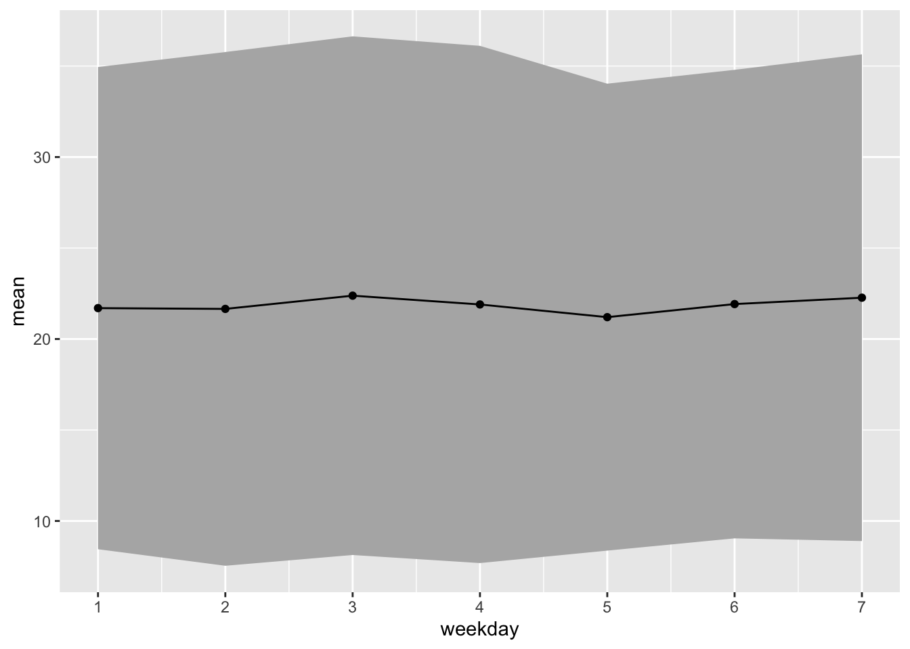
周末和工作日PM2.5没有明显区别，周五PM2.5可能略低
3.20 昼夜趋势：臭氧
d %>%
select(time_ymdh, PM2.5, PM10, SO2, NO2, O3, CO) %>%
mutate(year = year(time_ymdh),
time_d = yday(time_ymdh),
time_h = hour(time_ymdh)) %>%
ggplot(aes(time_h, O3, group=time_d))+ #用group将每天的数据分组，每天单独画一条线
geom_line(alpha=0.1, color="red2")+
facet_wrap(~year)## Warning: Removed 13 row(s) containing missing values (geom_path).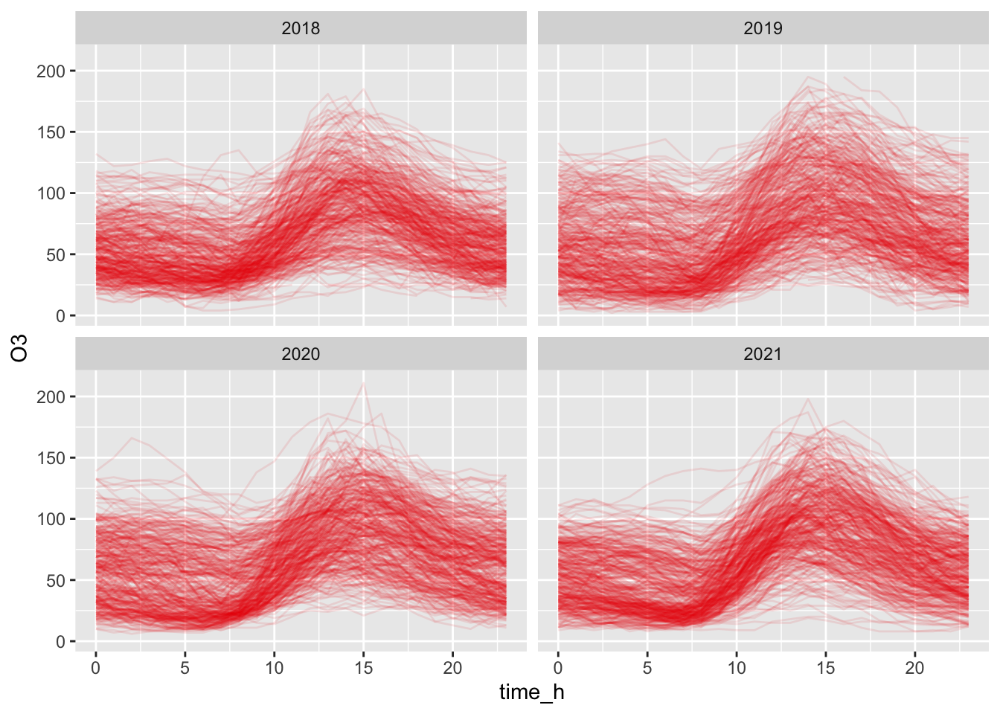
3.21 昼夜趋势：臭氧
臭氧浓度有明显的昼夜变化趋势，上午10点后上升，15点左右达到最高值。
#计算整体的各小时均值（不区分月份）
d_all <- d %>%
mutate(time_h = hour(time_ymdh)) %>%
group_by(time_h) %>%
summarise(mean= mean(O3, na.rm=T))
d %>%
mutate(year = year(time_ymdh),
time_h = hour(time_ymdh),
time_mt = month(time_ymdh)) %>%
group_by(time_mt, time_h) %>% #按月份计算各小时均值
summarise(mean= mean(O3, na.rm=T)) %>%
ggplot(aes(time_h, mean))+
geom_line(color="red2")+ #红线表示各月份的小时均值
geom_line(data=d_all, aes(time_h, mean), inherit.aes=F, color="grey50")+ #灰线表示总体均值
facet_wrap(~time_mt)## `summarise()` has grouped output by 'time_mt'. You can override using the
## `.groups` argument.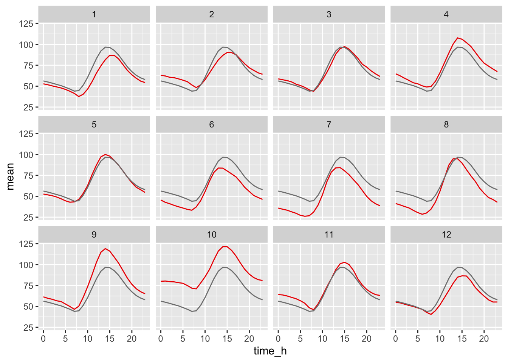
3.22 昼夜趋势：臭氧
红线：各月份均值；灰线：总体均值
各月份之间存在区别：例如1月份O3浓度低，峰值出现时间晚；6-7月份O3浓度低，峰值出现时间早；9-10月份O3浓度高，峰值出现时间与总体均值类似。
| ## 要点小结 |
操作 |函数
——————–|———————
将字符转化为时间 |ymd()系列
|ymd_hms()系列
提取时间信息 |year()-年；month()-月；day()-日
|hour()-时；minute()-分；second()-秒
|第几天：yday()-年；mday()-月；wday()-星期
坐标轴时间格式设置 |scale_x_date()
|scale_x_datetime() |